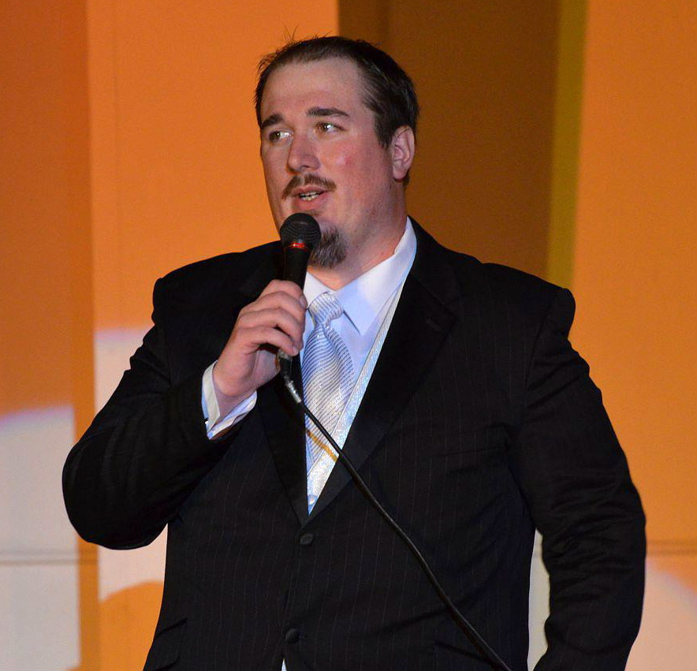

HOME  ABOUT US EVENTS SUPPORT CONTACT US
ABOUT US EVENTS SUPPORT CONTACT US
SEED is a nonprofit organization dedicated to exploration and discovery in the arts and trusts in Winona to inspire and be inspired.
Claire Richards
Artistic Director
Claire is very excited to be apart of SEED and anticipates that this wonderful opportunity will unite a beautiful community together through art. Claire has worked and taught in the performing art for 13 years. Claire has previously worked with The New Haven Theatre Company, Longwharf Theatre, Theatre4, New Ground Theatre, The Chicago Children's Choir, The Minneapolis Fringe Festival, and with Tony Award winning Director Philip William McKinnley. Claire has taught the performing arts at the Gard Arts Center in New London, CT, 99th Street Theatre in Chicago, IL, CenterStage Academy in Davenport, IA, and the International Festival of Arts and Ideas in New Haven, CT. Claire studied Theatre at St. Ambrose University. Claire believes in art and the lasting impact it has on those whose lives it enriches.
Sam Michael
Production Manager
Sam has worked in theatre and entertainment industry for the last 20 years. He has had the opportunity to work with organizations including Williamstown Theatre Festival, Yale Repertory Theatre, Hudson Scenic Studios and American Player's Theatre. Sam received a BA in theatre from St. Ambrose University and pursued his MFA at The Yale School of Drama.
Dave King
Technical Director
Dave has been involved in technical theater since 1998. His specialties involve lighting, sound, rigging, and set construction. Dave worked for Paramount Theater in St. Cloud, MN for 4 years, facilitating the production of over 100 shows. Dave is certified in Theatrical Rigging and has worked for numerous theater constuction companies. Some of the spaces Dave contributed his talent to are Overture Center for the Arts (Madison, WI), Winspear Opera House (Dallas, TX), Valley Performing Arts Center (California State University), Universidad de Puerto Rico at Rio Piedras (San Juan), and the Guthrie Theater (Minneapolis, MN). Winona's beauty brought Dave in, where he now works at Fastenal and has decided to embark on a journey with SEED.
Experiment 1: "At the Corner of 3rd of Nice"
Paul Lundquist
Writer

Paul was born in South Dakota was bored for 18 years and decided to move to Minneapolis to attend Brown College for Radio Broadcasting. Paul then bounced around Iowa at radio stations in Grinnell and Ottumwa before coming to Winona in 2005! Paul likes nerd things like Doctor Who, video games, and podcasts. He also enjoys writing short stories and sketch comedy, science fiction movies, and anything with a good story.
Erin Mae Clark
Writer
Erin Mae Clark is an Assistant Professor of English at Saint Mary's University, where she teaches American literature and writing courses. Originally from Chicago, Erin Mae moved to the Winona area from the state of Washington, where she completed her PhD in American and Holocaust literatures at Washington State University. An avid reader and eternally flighty adventurist, she fell in love with the nooks and crannies of the bluffs, where she walks her faithful hounds, Otis Redding, Jr.-Jr. and Zelda Fitzgerald.
• Encourage professional and artists community members to work, learn, and have fun together.
• Creating art for Winona, By Winona.
• Economically responsible productions, because let's face it, no one goes into the arts to make a buck.
• Fostering communication and understanding among Winonans.